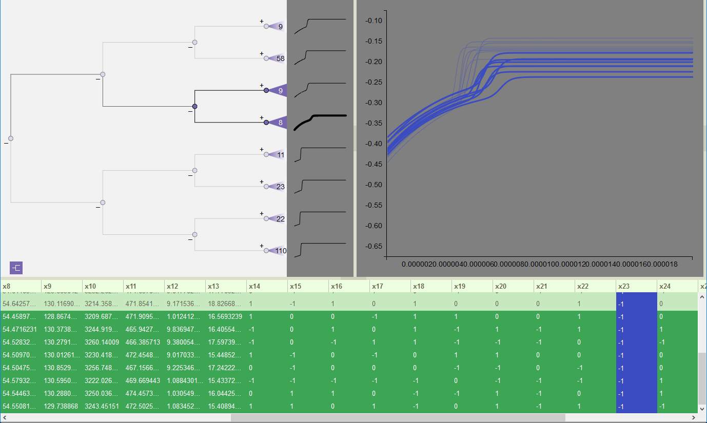
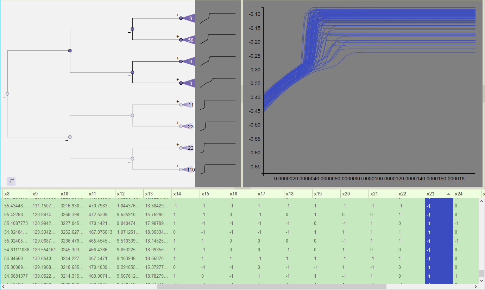

Time Series Variable Table
The Variable Table is much the same as the table in the CCA model (see Variable Table). However, there is one additional option for row ordering in the table, which we refer to as dendrogram ordering (i.e. if the dendrogram were expanded out to the leaf level, the simulations associated with the rows in the table would correspond to those of the dendrogram’s leaves). This is the default table order when the model is first visualized. The row ordering choice is explicitly shown by the color of the graph icon in the lower left corner of the Dendrogram View. When the graph icon is purple, as in the first figure below, the table is in dendrogram order. When the graph icon is lavender, as in the second figure below, the table is in sorted order. Clicking on the graph icon restores the table to dendrogram order, and returns the icon to purple. Sorting any of the table columns replaces this ordering with the sorted order, and changes the icon to lavender.
{kind=link}

Variable Table is in dendrogram order.
{kind=link}

Variable Table is in sorted order.